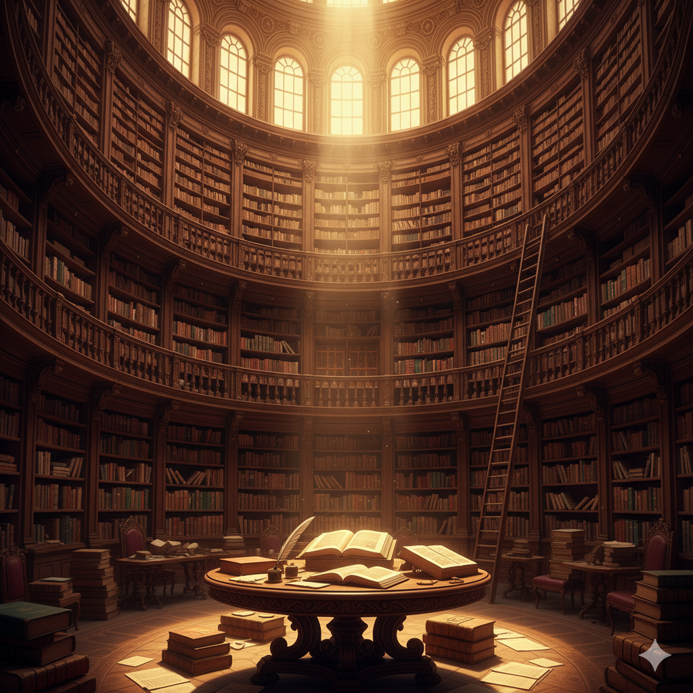

Descubre tu Próxima Gran Historia.
Lee donde quieras, cuando quieras. Tu biblioteca personal, siempre contigo.
Más Vendidos
Explora por Categorías
Colecciones Destacadas
Selecciones por nuestros editores para inspirar tu próxima lectura.
Misterio
Noches en Vela
Una selección de thrillers psicológicos que no podrás dejar de leer.
Ver colección →Ciencia Ficción
Futuros Distópicos
Explora sociedades del mañana que te harán cuestionar nuestro presente.
Ver colección →

Literatura Clásica
Gigantes de la Literatura
Las obras maestras atemporales que todo amante de la lectura debe conocer.
Ver colección →Autor del Mes
David Foster Wallace
"La verdadera libertad significa atención, conciencia, disciplina y esfuerzo; y poder preocuparse por los demás y sacrificarse por ellos, una y otra vez, de innumerables maneras poco glamurosas y sin cesar, cada día."
Sumérgete en la mente compleja y brillante de David Foster Wallace, uno de los autores más influyentes de finales del siglo XX. Explora sus novelas, cuentos y ensayos que combinan ingenio, profundidad y una mirada única sobre la condición humana.
Descubre sus obras¿Listo para encontrar tu próxima aventura?
Con muchos títulos esperando ser descubiertos, tu próxima gran historia está a solo un clic de distancia.
Explorar el Catálogo Completopor
Número de Serie: